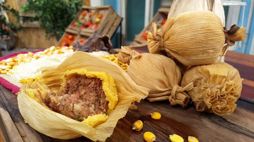

Tamales Santiagueños


El tamal es un plato típico del norte, elaborado a partir de pasta de maiz y carne. Su opción sin carne se define como Humita.
La pasta es envuelta entre hojas de maiz, y cocida al vapor o en agua directamente. Existen indicios que afirman que los tamales ya eran producidos en Mesoamérica en la época prehispánica. La palabra Tamal se define como "envuelto", en lengua Náhualt.
En la actualidad se suelen preparar de la misma forma que hace doscientos años, con carne magra, cebolla de verdeo, comino, pimentón, mucho ají.
Mirá la receta!El matambre es una parte fundamental de las empanadas tucumanas, además de los 13 repulgues.
Mirá la receta!